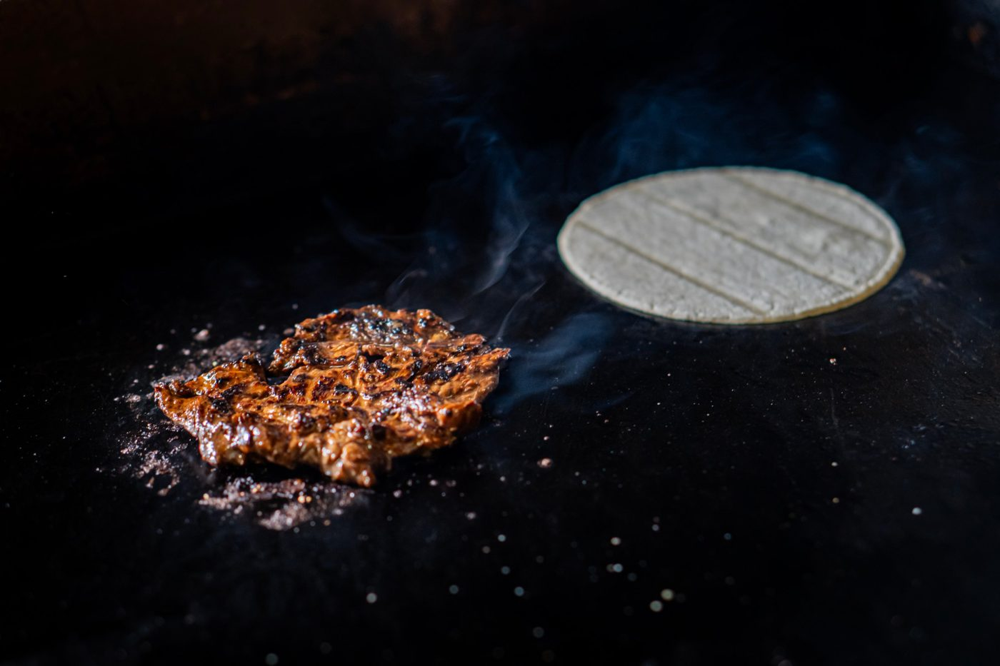
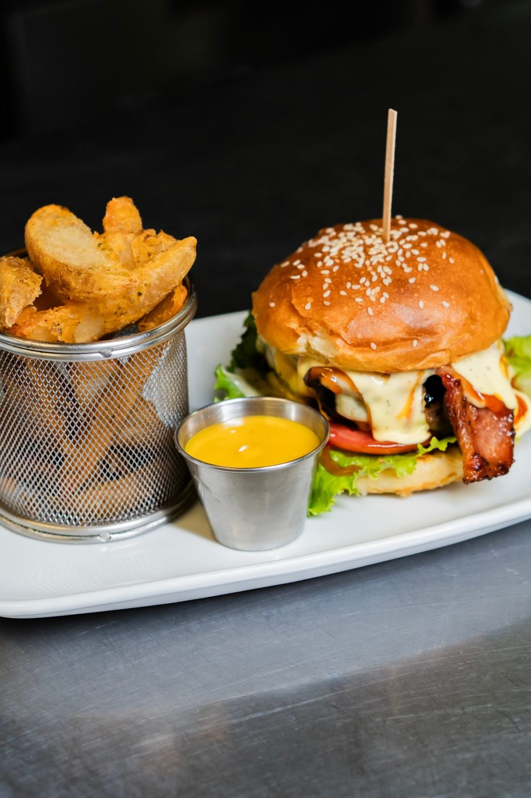
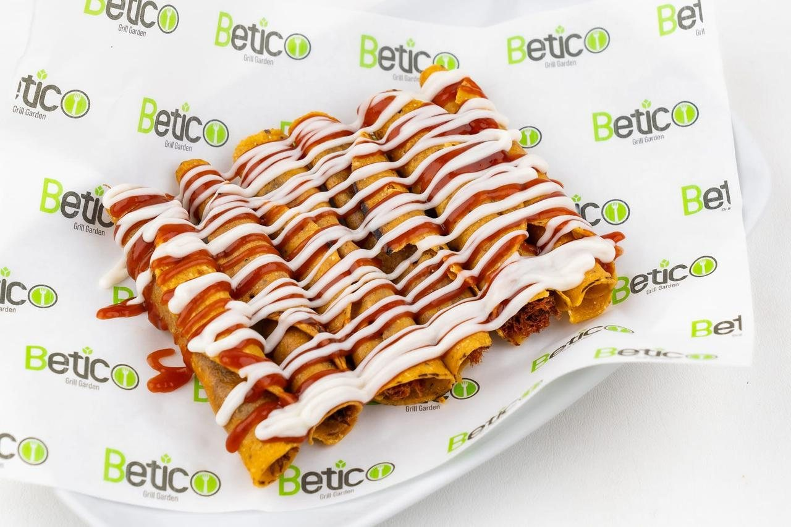
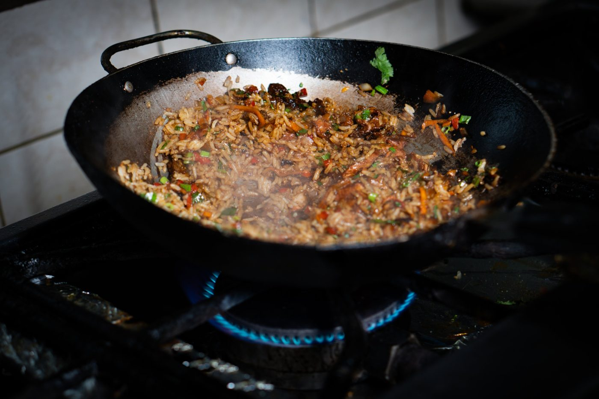

1
Cocina tica con fuego y frescura
En BETICO Grill Garden mezclamos lo mejor de la cocina costarricense con el sabor de la parrilla: casados, gallos, tacos, arroces, pastas y platos a la plancha preparados con ingredientes frescos.
Un lugar para compartir con familia y amigos, desde algo para pasar el rato hasta un buen casado del día.
Ver el menú completo
Lo favorito de nuestros clientes
Top 5 más vendidos

2Hamburguesa Betico
Pan artesanal, 200g de 100% carne de res, queso mozzarella, vegetales y lomito de aguja en salsa especial de la casa.
₡9000Ver en el menú →

3Tacos
Taco costarricense relleno de lomo de aguja. Pídalo arreglado.
3 por ₡1500 · 5 por ₡2400Ver en el menú →
 4
4Cortes a la parrilla
Entraña, rib eye y lomito a la parrilla con dos guarniciones a escoger.
desde ₡12500Ver en el menú →

5Arroces
Arroz achiotado y “olores” con los mejores sabores de Costa Rica, con papas fritas y ensalada de la huerta.
desde ₡5500Ver en el menú →
Nuestras especialidades
Maduro con queso
Canoa de plátano maduro con queso gratinado.
₡1900
Casados
Arroz, frijoles frescos, picadillo del día, ensalada del huerto, huevo frito y plátanos maduros.
desde ₡5500
Casado con pescado
Pescado a la plancha con arroz, frijoles, picadillo y ensalada.
₡5500
“Hecho con sabor tico, servido con cariño.”